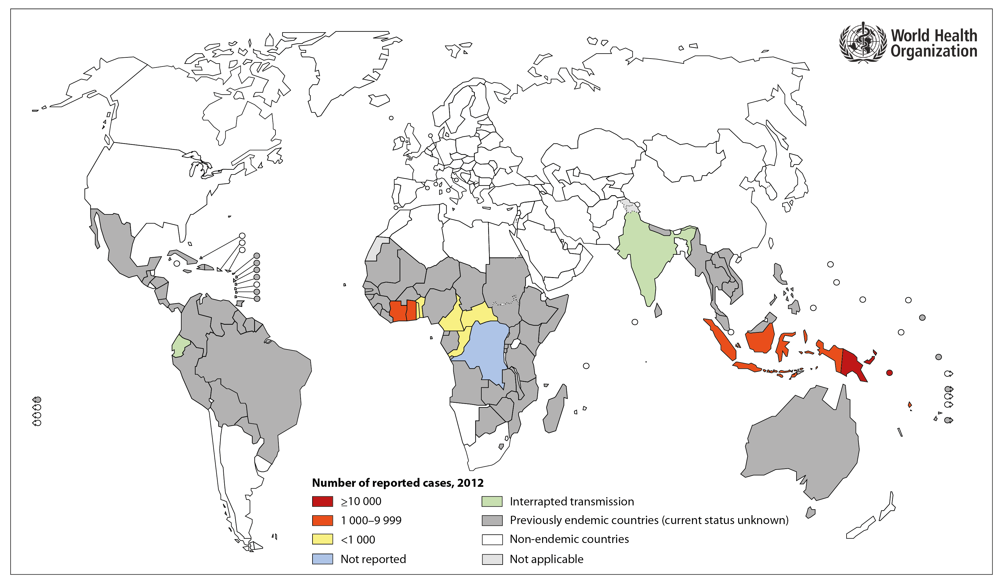

Abstract:
Yaws is a human disease found predominantly in tropical regions among children. The causative agent of Yaws, Treponema pallidum pertenue, is a spirochete bacteria closely related to syphilis - in fact, it is classified as the same species. Notably, unlike syphilis (a STD) Yaws is transmitted by skin-to-skin contact. The symptoms of Yaws are also not as severe as those of syphilis and include: the appearance of papillomatous lesions, arthralgia, malaise, and bone degradation. Of particular note, Yaws is easily treatable using a single dosage of antibiotic. As such, Yaws is actually rather close to being eliminated, putting it on the short list which includes only smallpox. The WHO estimates that the pathogen will no longer trouble mankind after 2020.
Taxonomy:
- Domain: Bacteria
- Phylum: Spirochaetes
- Class: Spirochaetia
- Order: Spirochaetales
- Family: Spirochaetaceae
- Genus: Treponema
- Species: pallidum
- Sub-species: pertenue
(Uniprot DB, Retreived Nov. 2015)
Pathology:
Three Major Stages of Infection:
First Stage:
- Mother Yaw or Lesion appears at site of exposure, grows with time
- Commonly found on the legs and ankles
- Incubation period ranges from 10-90 days
Second Stage:
- After 3 weeks to 2 years, secondary lesions appear
- Joint pain and malaise are common
- Palms and soles may fissure making walking difficult
Third Stage:
- Develops after >5 years of untreated infection
- Chronic destruction of heart, skin and bone
(Mitjà et al. 2013)
Infection:
- The pathogen is spread by skin-to-skin contact; only among humans
- The most common of the three endemic treponematoses (Yaws, Bejel and Pinta)
- Typically found in warm and humid climates(tropics) among poor children
- 75% of infected are under age 15
- Infection varies with changes in humidity
- In 2013, a total of 58,915 Yaws infections were reported by the WHO
- From 2008-2012 >300,000 cases were reported to the WHO
- Yaws can be effectively treated with a single dose of penicillin or azithromycin
(Kazadi et al. 2014; Mitjà et al. 2013)
Distribution (2012):

Fig 1: The following map displays the global distribution of Yaws in 2012. The disease has been eliminated from much of its historical range and is now confined to tropics in Africa and Asia/Oceania. That said, current monitoring efforts may not detect sub-clinical or latent yaws, so reporting may be incomplete.
(Kazadi et al. 2014)
A History of Yaws:
- Homo erectus skeletons dating back 1.6 million years show evidence of Yaws infection.3,4
- Yaws symptoms were first described in 1648 by Willem Piso, a Dutch physician in South America
- Observations were recorded in his book on the natural history of Brazil
- The causative agent of Yaws was elucidated in 1905 by Aldo Castellani, shorly after syphillis.1
- Penecillin emerges after WWII; discovered to be very effective against Yaws
- These two discoveries sparked a campaign to eliminate the disease from 1952 to 1964
- Global yaws prevalence dropped by 95%
- However, the eradication effort failed.6,7
(Harper et al. 2008; Mitjà et al. 2013; Rothschild et al. 1995; Stamm 2015; Rinaldi 2012)